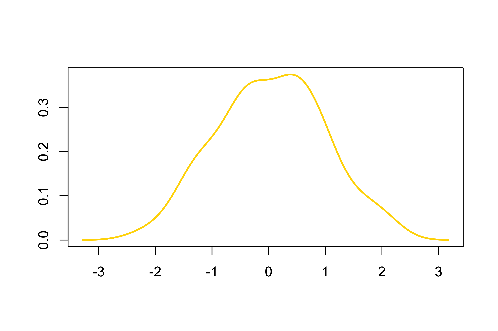

Introduction
Developer of this R markdown template should describe here the goal, scope, input data and major steps of this analysis.
This skeleton helps developers to implement their own reproducible analysis using the RoCA framework. Visit the RoCA site for more information about this project.
Definitation of terms:
- R markdown template : An .Rmd document that includes both R code and documentation of a data analysis procedure. It generates dynamic report according to user-specific input data and parameters for each analysis.
- YAML key-value pairs : The pairs are specifications of each analysis performed using the R Markdown template. They are formatted and saved together as a YAML file. It is highly recommended to pair each R markdown template with a YAML file having the same file name.
- Knitr report : Data analysis report in HTML, PDF, or Word file, generated by the knitr tool for each analysis, based on the R markdown template and the YAML specifications.
- Developer : A developer implements a data analysis procedure into a R markdown template, so the analysis can be repeated by any data analysts using their own data and parameters. The developer should also provide introduction and examples about how to set up an analysis using the template.
- Analyst : Given an available R markdown template generated by a developer, an analyst only needs to work with the pairing YAML file to set up a specific analysis. The analyst should follow instructions to prepare input data and choose parameters for each analysis.
Description
Project
Reporting of Custom Analysis
Analysis
Just a skeleton for developer to write their own Rmd templates
Section Title
Mesh up Markdown text with R code
Subsection Title

Figure 1. Figure example: density of 100 random values drawn from a normal distribution, using the rnorm function.
More Subsection Title
Table 1 Example table: summary of 4 random value vectors drawn from a normal distribution, using the rnorm function
| Draw_1 |
-2.682 |
-0.5829 |
0.02171 |
-0.09426 |
0.4411 |
1.665 |
| Draw_2 |
-2.104 |
-0.6847 |
0.08065 |
0.02438 |
0.7186 |
2.376 |
| Draw_3 |
-2.605 |
-0.4239 |
0.09784 |
0.11190 |
0.7078 |
2.858 |
| Draw_4 |
-2.687 |
-0.7464 |
-0.16550 |
-0.14800 |
0.5401 |
1.955 |
More Section Title
END OF DOCUMENT